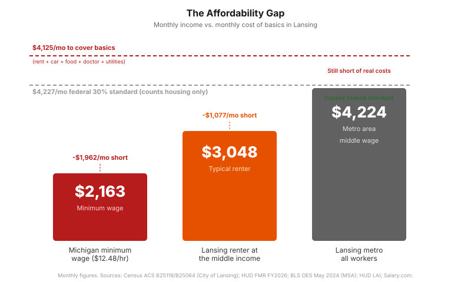
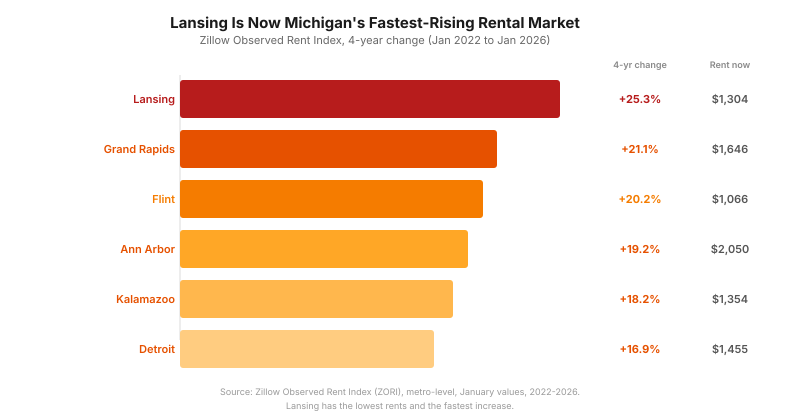
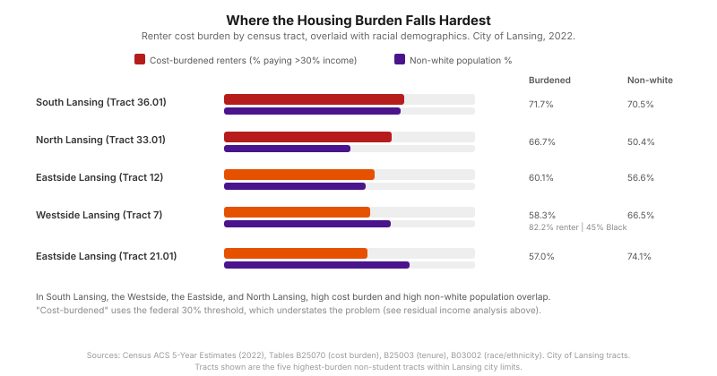
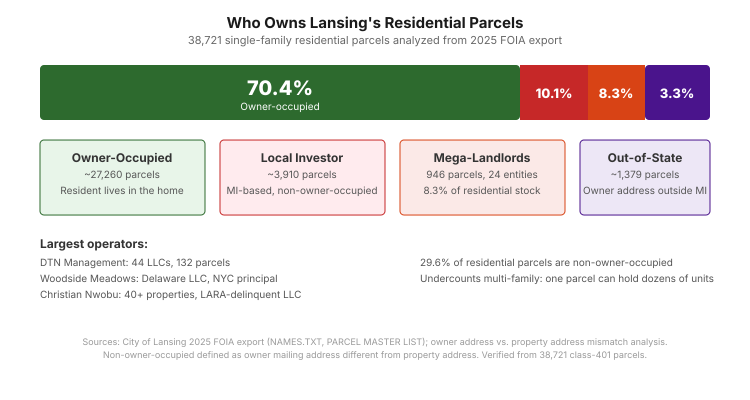
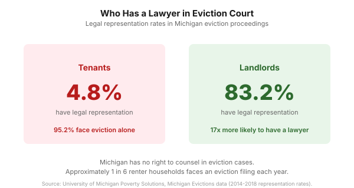

Lansing's Housing Crisis: Renters
LANSING, Mich. — A typical Lansing renter who works full time does not earn enough to cover rent, a car, groceries, and a doctor visit in the same month. Rents are rising faster in Lansing than anywhere else in Michigan, and the fastest increases are hitting the neighborhoods where people have the least room to absorb them. Everything in this post comes from public data. The numbers speak for themselves.
How affordability is measured, and why the standard method is wrong
Housing affordability is typically measured by whether a household spends more than 30% of income on rent. A better question is simpler: after paying for the basics, is there anything left? The table below answers that question for a Lansing renter earning $36,572 a year, which is the median, meaning half of Lansing's 23,394 renter households earn less. Everything in this table uses Lansing's actual rent, HUD's transportation estimate for Lansing census tracts, and local cost-of-living data:
| Expense | Annual | % of gross income |
|---|---|---|
| Gross income | $36,572 | 100% |
| Taxes (federal, state, city, FICA) | -$4,718 | 12.9% |
| Housing ($954/mo median rent) | -$11,448 | 31.3% |
| Transportation (HUD LAI, Lansing renters) | -$12,911 | 35.3% |
| Food | -$10,056 | 27.5% |
| Healthcare | -$7,152 | 19.6% |
| Utilities | -$3,216 | 8.8% |
| Residual | -$12,929 |
Sources: Census ACS B25119 (income), Census ACS B25064 (rent), HUD LAI (transport), Salary.com (food, healthcare, utilities). Taxes estimated at 12.9% effective (MI 4.25% + Lansing 1% + FICA 7.65%).
The federal government says a household is "cost-burdened" if it spends more than 30% of income on housing. By that measure, the renter in the table above is barely over the line. By the measure that counts, they are $12,929 short of covering basic needs every year. The 30% standard misses this because it only looks at housing. It ignores the car, the groceries, the doctor, and the electric bill. Economists call the alternative the "residual income" approach: instead of asking what percentage goes to rent, ask what is left after rent, and for most Lansing renters the answer is not enough.
Where the 30% standard came from
In 1969, Senator Edward Brooke amended the Housing Act of 1937 to cap public housing rent at 25% of tenant income. In 1981, the Reagan administration raised the cap to 30% as part of the Housing and Community Development Amendments, partly to reduce the federal subsidy required per unit. HUD later adopted 30% as the statistical threshold for "cost-burdened" in its Worst Case Housing Needs reports, and it became the national standard through repetition rather than through any rigorous analysis. A Census Bureau working paper confirmed the standard was never intended as a universal affordability measure. Urban Institute researchers George Galster and Kathryn Nelson found the 30% figure was essentially arbitrary. And the Harvard Joint Center for Housing Studies concluded in 2018 that the standard has "significant limitations as a measure of affordability."
Why researchers say it understates the problem
The 30% ratio treats all incomes the same, but a household earning $100,000 and paying 35% on housing has $65,000 left while a household earning $36,572 and paying 34% has roughly $24,100. The percentage is similar; what is left over is not. Economist Michael Stone at UMass Boston found the 30% standard consistently understates the burden on low-income households and overstates it on high-income ones. Formal economic modeling confirmed the residual approach better predicts eviction risk and housing instability than the ratio method. And in Evicted, Pulitzer Prize-winning sociologist Matthew Desmond documented families routinely spending 60-80% of income on housing, a reality the 30% threshold cannot describe. The MIT Living Wage Calculator estimates a family of four in the Lansing metro needs $103,777 per year to cover basic expenses, while a dual-income household at the Lansing renter wage brings in $73,133, leaving a $30,644 annual shortfall that the 30% standard does not capture.
Transportation makes it worse
The Center for Neighborhood Technology publishes a Housing + Transportation Index using a combined 45% threshold, and HUD adopted the same approach in its Location Affordability Index. Across the 34 census tracts within Lansing city limits, the median family spends an estimated 24.0% of income on housing and 25.0% on transportation, for a combined 49.0% on those two expenses alone. For a very low income renter earning $11,880 per year, housing and transportation consume an estimated 103.9% of income. The annual transportation cost for a Lansing renter household is approximately $12,911, driven by car dependence in south and west Lansing where there is no meaningful public transit to employment centers. The 30% housing-only standard hides this cost entirely.
The rest of this post includes the conventional 30% figures for reference because they are what HUD reports and what other cities use. They appear alongside, not instead of, the numbers that actually describe what Lansing renters experience.
The affordability gap

More than half of the 213,610 workers in the Lansing-East Lansing metro area earn less than $24.34 per hour, which is four cents below the $24.38 affordability threshold.
The acceleration

Lansing's rents grew below the state average for years, but that changed around 2022 when Lansing became the fastest-rising rental market in Michigan.
| Metro | Jan 2022 | Jan 2026 | 4-Year Change |
|---|---|---|---|
| Lansing | $1,041 | $1,304 | +25.3% |
| Grand Rapids | $1,359 | $1,646 | +21.1% |
| Ann Arbor | $1,720 | $2,050 | +19.2% |
| Kalamazoo | $1,145 | $1,354 | +18.2% |
| Detroit | $1,245 | $1,455 | +16.9% |
Source: Zillow Observed Rent Index, metro-level, January values.
The increases are not evenly distributed across the city. Three Lansing ZIP codes saw double-digit annual rent increases in 2026: 48911 in South Lansing (+11.4%), 48912 on the Eastside (+11.4%), and 48906 in North Lansing (+10.3%). South Lansing has the lowest rents in the metro at $1,067 per month, which means the fastest increases are landing in the neighborhoods where residents have the least room to absorb them.
HUD's Fair Market Rent for Ingham County jumped 12.5% in a single year (FY2025 to FY2026), the sharpest spike of any peer county. When HUD's own methodology detects a surge that large, it is confirming what renters already know.
The burden
By the federal 30% standard, more than one in two Lansing renters is cost-burdened, and one in four pays more than half their income on rent alone. But rent is only one bill. When you add in a car, food, a doctor, and the electric bill, the typical Lansing renter household comes up $1,077 short every month, and half of renters earn less than that. The affordable housing that does exist is 98% occupied, with waitlists that open once every 10 months for a five-day window. When the Lansing Housing Commission last opened applications, 2,800 people applied in five days and were lotteried down to 600.
The racial disparity

| Metric | Black | White | Disparity |
|---|---|---|---|
| Mortgage denial rate | 39.5% | 21.9% | 1.8x |
| Expected income at age 35 (low-income origin) | $22,641 | $32,108 | -$9,467 |
| Incarceration rate (per 100K) | 757 | 118 | 6.4x |
| Households below ALICE threshold | 62% | 38% | 1.6x |
Sources: HMDA/CFPB (Ingham County, 2023); Opportunity Insights (FIPS 26065); Vera Institute (2019); United Way ALICE Report (2025).
In the Lansing area, Black applicants are denied mortgages at nearly twice the rate of white applicants. When denied, they were seeking loans averaging $93,601, which is $19,057 less than denied white applicants. They were already pursuing more modest homeownership and still being rejected at higher rates. The neighborhoods with the highest renter cost burden overlap with the highest concentrations of Black residents: Tract 36.01 in South Lansing has 71.7% of renters exceeding the 30% threshold and a 70.5% non-white population, Tract 7 on the Westside has 58.3% exceeding the threshold with a population that is 45% Black and 82.2% renter, and Tract 21.01 on the Eastside is 74.1% non-white with 57% exceeding the threshold. In neighborhoods where the 30% standard already shows a majority burdened, the actual shortfall against basic needs is deeper still.
Who owns the housing


Nearly a third of Lansing's residential parcels are owned by someone who does not live in them. The largest operators manage dozens of LLCs across multiple states, making code enforcement and accountability difficult. When a tenant in one of these properties faces eviction, there is a 95% chance they will not have a lawyer, while the landlord almost certainly will.
What is being done
Ingham County voters passed a housing and homelessness millage in November 2024, generating $5.6 million per year for four years. The city purchased 50 ModPod units for $645,000 as transitional housing for people who are unhoused. The Lansing Housing Commission has 111 new affordable units under construction, the first new LHC construction in 20 years, with 50 additional senior units planned in REO Town.
The state has a goal of 115,000 new units and has created roughly 84,000 so far. Governor Whitmer proposed $2 billion for affordable housing in 2025. Bipartisan legislation introduced in February 2026 would allow duplexes in single-family zones and reduce parking requirements.
These are responses to a crisis that has been building for years. Whether they are proportional to the scale of the problem depends on how you read the numbers above. Michigan is still short 195,462 rental homes affordable to its lowest-income renters. In Lansing, the housing availability rate is 3.1%, below the 5% threshold economists consider healthy, with 2,501 housing units sitting off-market entirely and affordable housing running at 98% occupancy with a waitlist measured in years.
Who benefits from a housing market this tight, and who in city government is responsible for the policies that produced it?
Sources
United Way ALICE Report, 2025 edition (Ingham County). NLIHC Out of Reach 2025 (Michigan). Census ACS B25070 (renter cost burden, 2022). Census ACS B25119 (renter income, 2023). Zillow Observed Rent Index (metro and ZIP, January 2022-2026). HUD Fair Market Rents (FY2024-2026). BLS Occupational Employment and Wage Statistics (Lansing-East Lansing MSA, May 2024). HMDA/CFPB (Ingham County mortgage data, 2023). Opportunity Insights (county outcomes, FIPS 26065). Vera Institute (incarceration, 2019). HUD MI-508 Point-in-Time Count (Jan 30, 2024). U of M Poverty Solutions (eviction data). BS&A Online and City of Lansing FOIA export (parcel data, 2025). Detroit News (Feb 22, 2026, rent acceleration). WILX (Feb 26, 2026, 900+ tagged properties). City Pulse (affordable housing occupancy, waitlist). National Housing Crisis Task Force (Ingham County millage). NLIHC Michigan Housing Profile (195,462-unit shortage). Michigan Housing Data Portal (1.8% availability).